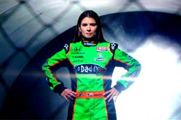

Since its inception in 1987 Manhattan Place Entertainment has evolved into a production entity that has at its disposal a collection of extraordinarily talented individuals who specialize in virtually every aspect of the production and creative services industry.
We are a direct source for creative services, technical services, and comprehensive production support, and have long been known for providing an exceptionally high quality product without the exceptionally high price tag.
We conceptualize, we write, we produce, we direct, we shoot, we light, we edit … we are the people who do the actual work.
From advertising and marketing campaigns to episodic television series, commercials, on-air promotions, public service announcements, and branded content, and across all forms of media, Manhattan Place Entertainment has produced award winning content that has been viewed by audiences literally in the tens of millions.
Along the way we have garnered dozens of the industry's top honors including multiple Emmy Awards, Promax Awards, Telly Awards, and Cine Eagles, while helping our clients win dozens and dozens more.
Manhattan Place Entertainment owns an extensive inventory of state of the art camera, lighting, and sound packages for field acquisition, and has a full fledged post production editing and duplication facility.
With the rapid changes in technology, we have positioned ourselves to stay one step ahead of the curve by having easy access to any equipment that we don't own. We receive preferential treatment and pricing from our industry partners which literally enables us to be equipped for any possible production scenario.
Owner - Director - DP
In his professional career Steve Cohen has successfully worn almost every hat imaginable in video, television, and commercial production.
A five time Emmy Award winner, Steve has been the recipient of dozens of other industry awards including the Promax, Tellys, Cine Eagles and more.
Director - DP
Since shifting into moving images from still photography in the early '90s, Chris has worked around the world, shooting everything from commercials and music videos to documentaries and web content, shorts and art films.
Continue Reading Christopher Bierlein's Bio Here »Director - DP
Axel Baumann began his career as a cinematographer in 1997 when he shot his first feature film, Creation, directed by Thomas Roth.
Since then he has shot five feature films as well as numerous documentaries for National Geographic, Discovery Channel, The History Channel, The Sundance Channel, PBS, A&E, as well as commercials for Adidas, G.E., Execjets, Sony, IBM and Allstate.
Continue Reading Axel Baumann's Bio Here »